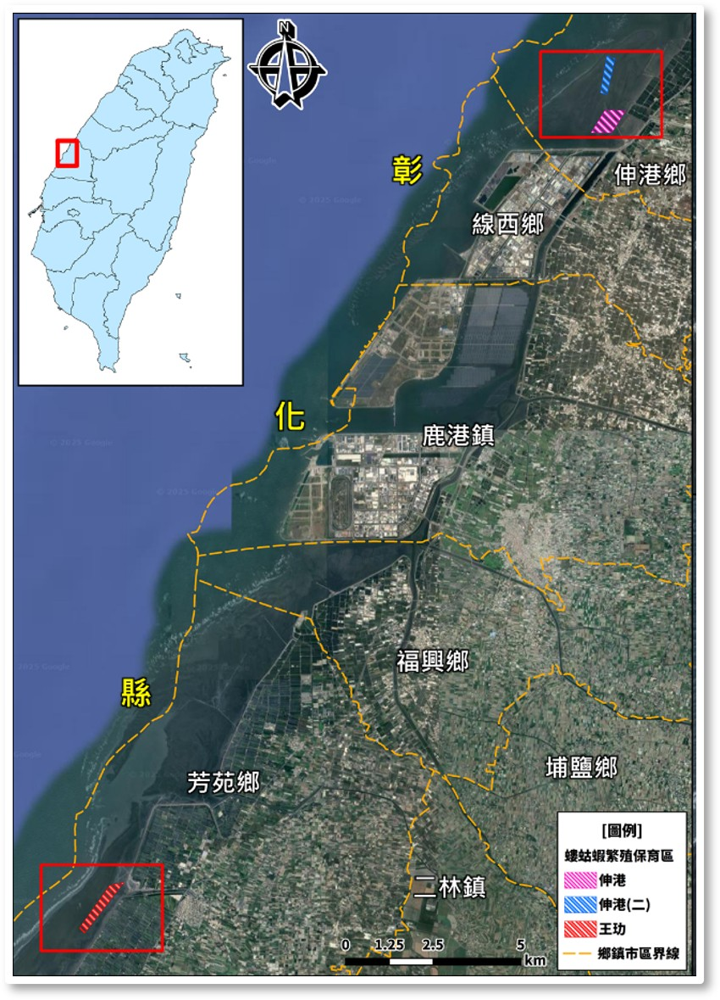

Occurrences of Perfluorobutanoic Acid (PFBA) in mud shrimp breeding conservation areas on the western coast of Taiwan.
Target Species: Mud shrimp (Austinogebia edulis). An economically important seafood species protected within Marine Protected Areas (MPAs) in western Taiwan.
The Issue: Despite a decade of protection, there has been no significant improvement in their abundance.
The Threat (PFBA): As benthic organisms, mud shrimp accumulate Perfluorobutanoic acid (PFBA) through sediment and water. PFBA currently has the highest detection rate among eight PFAS studied in these coastal waters.

Comparative analysis reveals stark differences in chemical accumulation and population density between the two monitored Marine Protected Areas.
Key Finding: Sediment environments with lower concentrations of PFBA harbor healthier and significantly more abundant mud shrimp populations.
Management Recommendations: